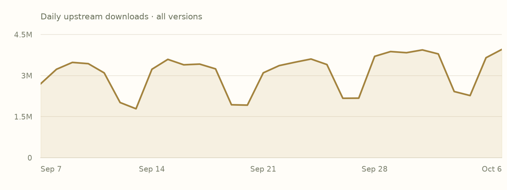
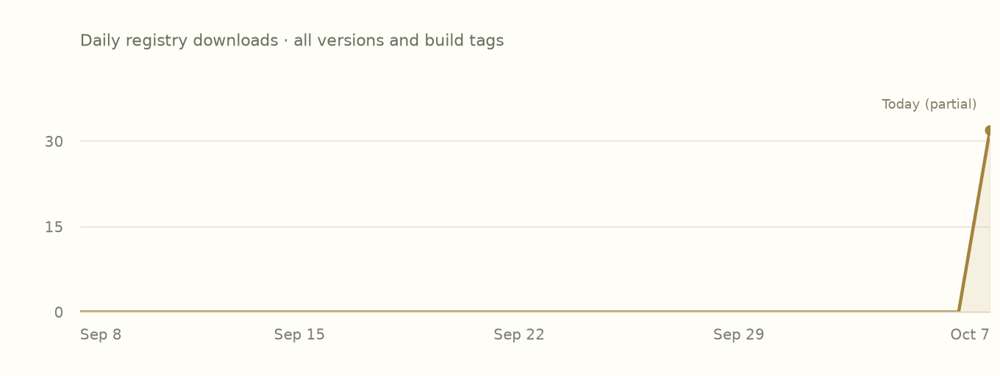

README
Author-providedFrom the checksum-verified upstream source archive. Cargo examples describe the upstream Rust library.
TokioConf 2026 program and tickets are now available!
Tokio
A runtime for writing reliable, asynchronous, and slim applications with the Rust programming language. It is:
-
Fast: Tokio's zero-cost abstractions give you bare-metal performance.
-
Reliable: Tokio leverages Rust's ownership, type system, and concurrency model to reduce bugs and ensure thread safety.
-
Scalable: Tokio has a minimal footprint, and handles backpressure and cancellation naturally.
Crates.io MIT licensed Build Status Discord chat
Website | Guides | API Docs | Chat
Overview
Tokio is an event-driven, non-blocking I/O platform for writing asynchronous applications with the Rust programming language. At a high level, it provides a few major components:
- A multithreaded, work-stealing based task scheduler.
- A reactor backed by the operating system's event queue (epoll, kqueue, IOCP, etc.).
- Asynchronous TCP and UDP sockets.
These components provide the runtime components necessary for building an asynchronous application.
Example
A basic TCP echo server with Tokio.
Make sure you enable the full features of the tokio crate on Cargo.toml:
[dependencies]
tokio = { version = "1.53.2", features = ["full"] }
Then, on your main.rs:
use tokio::net::TcpListener;
use tokio::io::{AsyncReadExt, AsyncWriteExt};
#[tokio::main]
async fn main() -> Result<(), Box<dyn std::error::Error>> {
let listener = TcpListener::bind("127.0.0.1:8080").await?;
loop {
let (mut socket, _) = listener.accept().await?;
tokio::spawn(async move {
let mut buf = [0; 1024];
// In a loop, read data from the socket and write the data back.
loop {
let n = match socket.read(&mut buf).await {
// socket closed
Ok(0) => return,
Ok(n) => n,
Err(e) => {
eprintln!("failed to read from socket; err = {:?}", e);
return;
}
};
// Write the data back
if let Err(e) = socket.write_all(&buf[0..n]).await {
eprintln!("failed to write to socket; err = {:?}", e);
return;
}
}
});
}
}
More examples can be found here. For a larger "real world" example, see the mini-redis repository.
To see a list of the available feature flags that can be enabled, check our docs.
Getting Help
First, see if the answer to your question can be found in the Guides or the API documentation. If the answer is not there, there is an active community in the Tokio Discord server. We would be happy to try to answer your question. You can also ask your question on the discussions page.
Contributing
:balloon: Thanks for your help improving the project! We are so happy to have you! We have a contributing guide to help you get involved in the Tokio project.
Related Projects
In addition to the crates in this repository, the Tokio project also maintains several other libraries, including:
-
axum: A web application framework that focuses on ergonomics and modularity. -
hyper: A fast and correct HTTP/1.1 and HTTP/2 implementation for Rust. -
tonic: A gRPC over HTTP/2 implementation focused on high performance, interoperability, and flexibility. -
warp: A super-easy, composable, web server framework for warp speeds. -
tower: A library of modular and reusable components for building robust networking clients and servers. -
tracing(formerlytokio-trace): A framework for application-level tracing and async-aware diagnostics. -
mio: A low-level, cross-platform abstraction over OS I/O APIs that powerstokio. -
bytes: Utilities for working with bytes, including efficient byte buffers. -
loom: A testing tool for concurrent Rust code.
Changelog
The Tokio repository contains multiple crates. Each crate has its own changelog.
tokio- view changelogtokio-util- view changelogtokio-stream- view changelogtokio-macros- view changelogtokio-test- view changelog
Supported Rust Versions
Tokio will keep a rolling MSRV (minimum supported rust version) policy of at least 6 months. When increasing the MSRV, the new Rust version must have been released at least six months ago. The current MSRV is 1.71.
Note that the MSRV is not increased automatically, and only as part of a minor release. The MSRV history for past minor releases can be found below:
- 1.48 to now - Rust 1.71
- 1.39 to 1.47 - Rust 1.70
- 1.30 to 1.38 - Rust 1.63
- 1.27 to 1.29 - Rust 1.56
- 1.17 to 1.26 - Rust 1.49
- 1.15 to 1.16 - Rust 1.46
- 1.0 to 1.14 - Rust 1.45
Note that although we try to avoid the situation where a dependency transitively increases the MSRV of Tokio, we do not guarantee that this does not happen. However, every minor release will have some set of versions of dependencies that works with the MSRV of that minor release.
Release schedule
Tokio doesn't follow a fixed release schedule, but we typically make one minor release each month. We make patch releases for bugfixes as necessary.
Bug patching policy
For the purposes of making patch releases with bugfixes, we have designated certain minor releases as LTS (long term support) releases. Whenever a bug warrants a patch release with a fix for the bug, it will be backported and released as a new patch release for each LTS minor version. Our current LTS releases are:
1.51.x- LTS release until March 2027. (MSRV 1.71)1.53.x- LTS release until September 2027. (MSRV 1.71)
Each LTS release will continue to receive backported fixes for at least a year. If you wish to use a fixed minor release in your project, we recommend that you use an LTS release.
To use a fixed minor version, you can specify the version with a tilde. For
example, to specify that you wish to use the newest 1.51.x patch release, you
can use the following dependency specification:
tokio = { version = "~1.51", features = [...] }
Previous LTS releases
1.8.x- LTS release until February 2022.1.14.x- LTS release until June 2022.1.18.x- LTS release until June 2023.1.20.x- LTS release until September 2023.1.25.x- LTS release until March 2024.1.32.x- LTS release until September 2024.1.36.x- LTS release until March 2025.1.38.x- LTS release until July 2025.1.43.x- LTS release until March 2026.1.47.x- LTS release until September 2026.
License
This project is licensed under the MIT license.
Contribution
Unless you explicitly state otherwise, any contribution intentionally submitted for inclusion in Tokio by you shall be licensed as MIT, without any additional terms or conditions.
Features
Declared activationDefault state includes transitively enabled local features. Follow a feature name to its declaration.
Swipe horizontally to see all columns.
| Feature | Default | Enables |
|---|---|---|
bytes | No |
|
default | Yesdefault | No additional feature or dependency edges declared. |
fs | No | No additional feature or dependency edges declared. |
full | No | |
io-std | No | No additional feature or dependency edges declared. |
io-uring | No |
|
io-util | No | |
libc | No |
|
macros | No | |
mio | No |
|
net | No | |
parking_lot | No |
|
process | No |
|
rt | No | No additional feature or dependency edges declared. |
rt-multi-thread | No | |
schedule-latency | No | No additional feature or dependency edges declared. |
signal | No |
|
signal-hook-registry | No |
|
socket2 | No |
|
sync | No | No additional feature or dependency edges declared. |
taskdump | No |
|
test-util | No | |
time | No | No additional feature or dependency edges declared. |
tokio-macros | No |
|
tracing | No |
|
windows-sys | No |
|
Plain names enable local features. dependency/feature forwards a dependency feature; dependency?/feature forwards only if that dependency is already enabled. Empty edges do not imply no effect in source.
Dependencies
Manifest requirementsVersion requirements and activation conditions, as recorded. These are declarations, not a resolved project graph.
Swipe horizontally to see all columns.
| Package | Requirement | Kind | Activation |
|---|---|---|---|
crates-io/backtraceAlias: backtrace | ^0.3.58Default features: not overridden | Optional | Not activated by defaults when its target condition matchesTarget condition: cfg(all(tokio_unstable, target_os = "linux")) |
crates-io/bytesAlias: bytes | ^1.2.1Default features: not overridden | Optional | Not activated by defaults |
crates-io/io-uringAlias: io-uring | ^0.7.11Default features: disabled | Optional | Not activated by defaults when its target condition matchesTarget condition: cfg(all(tokio_unstable, target_os = "linux")) |
crates-io/libcAlias: libc | ^0.2.168Default features: not overridden | Optional | Not activated by defaults when its target condition matchesTarget condition: cfg(all(tokio_unstable, target_os = "linux")) |
crates-io/libcAlias: libc | ^0.2.168Default features: not overridden | Optional | Not activated by defaults when its target condition matchesTarget condition: cfg(target_os = "wasi") |
crates-io/libcAlias: libc | ^0.2.168Default features: not overridden | Optional | Not activated by defaults when its target condition matchesTarget condition: cfg(unix) |
crates-io/mioAlias: mio | ^1.2.0Default features: disabledRequests: os-ext, os-poll | Optional | Not activated by defaults when its target condition matchesTarget condition: cfg(all(tokio_unstable, target_os = "linux")) |
crates-io/mioAlias: mio | ^1.2.0Default features: disabled | Optional | Not activated by defaults |
crates-io/parking_lotAlias: parking_lot | ^0.12.0Default features: not overridden | Optional | Not activated by defaults |
crates-io/pin-project-liteAlias: pin-project-lite | ^0.2.11Default features: not overridden | Required | Required by the manifest |
crates-io/signal-hook-registryAlias: signal-hook-registry | ^1.1.1Default features: not overridden | Optional | Not activated by defaults when its target condition matchesTarget condition: cfg(unix) |
crates-io/slabAlias: slab | ^0.4.9Default features: not overridden | Optional | Not activated by defaults when its target condition matchesTarget condition: cfg(all(tokio_unstable, target_os = "linux")) |
crates-io/socket2Alias: socket2 | ^0.6.3Default features: not overriddenRequests: all | Optional | Not activated by defaults when its target condition matchesTarget condition: cfg(any(not(target_family = "wasm"), all(target_os = "wasi", not(target_env = "p1")))) |
crates-io/tokio-macrosAlias: tokio-macros | ~2.7.0Default features: not overridden | Optional | Not activated by defaults |
crates-io/tracingAlias: tracing | ^0.1.29Default features: disabledRequests: std | Optional | Not activated by defaults when its target condition matchesTarget condition: cfg(tokio_unstable) |
crates-io/windows-sysAlias: windows-sys | ^0.61Default features: not overridden | Optional | Not activated by defaults when its target condition matchesTarget condition: cfg(windows) |
Dependents
Preview coverageDeclared relationships within these six package pages. Conditional edges may depend on features or targets.
No matching dependency declarations in this six-package preview.
Indexed builds
Bound assetsEach row groups compiled units with the same target, toolchain, profile and feature selection. Missing builds do not mean upstream incompatibility.
Swipe horizontally to see all columns.
| Target | Toolchain | Profile | Features | Units |
|---|---|---|---|---|
aarch64-apple-darwin | rustc 1.98.0 (88d9e12ae 2026-08-18) | debug | default | 1 |
aarch64-apple-darwin | rustc 1.98.0 (88d9e12ae 2026-08-18) | debug | default, sync | 1 |
aarch64-apple-darwin | rustc 1.98.0 (88d9e12ae 2026-08-18) | release | default | 1 |
aarch64-apple-darwin | rustc 1.98.0 (88d9e12ae 2026-08-18) | release | default, sync | 1 |
x86_64-unknown-linux-gnu | rustc 1.98.0 (88d9e12ae 2026-08-18) | debug | default | 1 |
x86_64-unknown-linux-gnu | rustc 1.98.0 (88d9e12ae 2026-08-18) | debug | default, sync | 1 |
x86_64-unknown-linux-gnu | rustc 1.98.0 (88d9e12ae 2026-08-18) | release | default | 1 |
x86_64-unknown-linux-gnu | rustc 1.98.0 (88d9e12ae 2026-08-18) | release | default, sync | 1 |
Releases
Upstream & IncanUpstream release dates and recorded Incan availability. This preview displays the 1.53.2 manifest and builds; older entries link to their upstream records.
Swipe horizontally to see all columns.
| Version | Upstream released | Availability | Source |
|---|---|---|---|
1.53.2 | 2026-10-03 | Incan indexed | Release notes |
1.51.5 | 2026-10-03 | Upstream only | Release notes |
1.53.1 | 2026-07-20 | Incan indexed | Release notes |
1.53.0 | 2026-07-17 | Upstream only | Release notes |
1.52.4 | 2026-07-16 | Upstream only | Release notes |
1.51.4 | 2026-07-16 | Upstream only | Release notes |
1.52.3 | 2026-05-08 | Incan indexed | Release notes |
1.51.3 | 2026-05-08 | Upstream only | Release notes |
Notes for 1.53.2
Author-provided, from the matching packaged changelog where available.
1.53.2 (October 3rd, 2026)
Fixed
- fs: handle integer overflow in buffered relative seek (#8574)
- io: revert "always cleanup
AsyncFdregistration list on deregister" (#8540) - process: unregister Windows wait before closing child handle (#8564)
- rt: drop blocking pool mutex before shutting down rejected task (#8562)
- sync: fix mpsc index wraparound in block reclamation (#8546)
- sync: forget mpsc
Permitbefore sending value (#8560) - sync: validate
MAX_PERMITSinSemaphore::acquire(#8548) - sync: wake broadcast
Sender::closedoutside mutex (#8558) - task: drop replaced waker outside lock in
JoinSet(#8554) - time: drop timer lock before dropping waker in
clear_entry(#8552) - time: expire timers directly on shutdown without rotating wheel (#8570)
Fixed (unstable)
- fs: clamp
io_uringread length tou32::MAX(#8572) - rt: ignore
current_threadtask dumps from other runtimes (#8544) - rt: preserve
io_uringcontext if a completion waker panics (#8566) - sync: fix semaphore use-after-free and permit leak on tracing panic (#8542)
- taskdump: restore deferred leaf wakes during capture (#8445)
- time: drop stored waker when cancelling alt timer entry (#8550)
Popularity
Snapshot · 2026-10-07Downloads are source-specific counts, not unique users or project installs. Both histories cover all versions.
crates.io downloads
30 complete UTC days
2026-09-07–2026-10-06 · crates.io data
View daily crates.io values
| UTC date | Downloads |
|---|---|
| 2026-09-07 | 2697820 |
| 2026-09-08 | 3230727 |
| 2026-09-09 | 3481748 |
| 2026-09-10 | 3435829 |
| 2026-09-11 | 3098313 |
| 2026-09-12 | 2015961 |
| 2026-09-13 | 1787823 |
| 2026-09-14 | 3231470 |
| 2026-09-15 | 3593135 |
| 2026-09-16 | 3393985 |
| 2026-09-17 | 3420389 |
| 2026-09-18 | 3245300 |
| 2026-09-19 | 1934042 |
| 2026-09-20 | 1920406 |
| 2026-09-21 | 3100884 |
| 2026-09-22 | 3364902 |
| 2026-09-23 | 3489155 |
| 2026-09-24 | 3605561 |
| 2026-09-25 | 3403434 |
| 2026-09-26 | 2171057 |
| 2026-09-27 | 2175564 |
| 2026-09-28 | 3702989 |
| 2026-09-29 | 3878206 |
| 2026-09-30 | 3836189 |
| 2026-10-01 | 3938284 |
| 2026-10-02 | 3791347 |
| 2026-10-03 | 2417931 |
| 2026-10-04 | 2270290 |
| 2026-10-05 | 3652759 |
| 2026-10-06 | 3958014 |
Incan registry downloads
GitHub Packages · all build tags
2026-09-08–2026-10-07 · 2026-10-07 is a partial UTC day · GitHub Packages data
View daily registry values
| UTC date | Downloads |
|---|---|
| 2026-09-08 | 0 |
| 2026-09-09 | 0 |
| 2026-09-10 | 0 |
| 2026-09-11 | 0 |
| 2026-09-12 | 0 |
| 2026-09-13 | 0 |
| 2026-09-14 | 0 |
| 2026-09-15 | 0 |
| 2026-09-16 | 0 |
| 2026-09-17 | 0 |
| 2026-09-18 | 0 |
| 2026-09-19 | 0 |
| 2026-09-20 | 0 |
| 2026-09-21 | 0 |
| 2026-09-22 | 0 |
| 2026-09-23 | 0 |
| 2026-09-24 | 0 |
| 2026-09-25 | 0 |
| 2026-09-26 | 0 |
| 2026-09-27 | 0 |
| 2026-09-28 | 0 |
| 2026-09-29 | 0 |
| 2026-09-30 | 0 |
| 2026-10-01 | 0 |
| 2026-10-02 | 0 |
| 2026-10-03 | 0 |
| 2026-10-04 | 0 |
| 2026-10-05 | 0 |
| 2026-10-06 | 0 |
| 2026-10-07 | 32 |
Security
Collection coverageUpstream advisories have not been collected
This snapshot does not contain an upstream advisory feed. Build availability and adoption do not establish that a package is free of vulnerabilities.
Provenance
Recorded evidence- Identity
crates-io/tokio· 1.53.2- Adopted by
- encero-systems/incan.pub maintainers · 2026-10-06
- Index checkpoint
65d45e9e40ab2f5a04a67788dc2282b349e3f8d8- Indexed source digest
sha256:087707dbaf31d7d481b10009041c8f20b78c250a26aab4b66c95c0b612f5d53e- Upstream crate SHA-256
sha256:e95f91fcc7a621e8b030f6aa23c71fe9838ae2fb4d8118b75602a328f5144044- Event
- Recorded adoption event
- Popularity snapshot
- 2026-10-07 · Frozen input JSON
View recorded loaf.toml
# Projection of the incan.pub event log; regenerate with `incan-pub build`, never edit.
[project]
name = "crates-io/tokio"
version = "1.53.2"
[project.features]
bytes = ["dep:bytes"]
default = []
fs = []
full = ["fs", "io-util", "io-std", "macros", "net", "parking_lot", "process", "rt", "rt-multi-thread", "signal", "sync", "time"]
io-std = []
io-uring = ["dep:io-uring", "libc", "dep:mio", "mio/os-poll", "mio/os-ext", "dep:slab"]
io-util = ["bytes"]
libc = ["dep:libc"]
macros = ["tokio-macros"]
mio = ["dep:mio"]
net = ["libc", "dep:mio", "mio/os-poll", "mio/os-ext", "mio/net", "socket2", "dep:windows-sys", "windows-sys/Win32_Foundation", "windows-sys/Win32_Security", "windows-sys/Win32_Storage_FileSystem", "windows-sys/Win32_System_Pipes", "windows-sys/Win32_System_SystemServices"]
parking_lot = ["dep:parking_lot"]
process = ["bytes", "libc", "dep:mio", "mio/os-poll", "mio/os-ext", "mio/net", "signal-hook-registry", "dep:windows-sys", "windows-sys/Win32_Foundation", "windows-sys/Win32_System_Threading", "windows-sys/Win32_System_WindowsProgramming"]
rt = []
rt-multi-thread = ["rt"]
schedule-latency = []
signal = ["libc", "dep:mio", "mio/os-poll", "mio/net", "mio/os-ext", "signal-hook-registry", "dep:windows-sys", "windows-sys/Win32_Foundation", "windows-sys/Win32_System_Console"]
signal-hook-registry = ["dep:signal-hook-registry"]
socket2 = ["dep:socket2"]
sync = []
taskdump = ["dep:backtrace"]
test-util = ["rt", "sync", "time"]
time = []
tokio-macros = ["dep:tokio-macros"]
tracing = ["dep:tracing"]
windows-sys = ["dep:windows-sys"]
[rust]
name = "tokio"
type = "lib"
edition = "2021"
[dependencies]
backtrace = { loaf = "crates-io/backtrace", version = "^0.3.58", optional = true, target = "cfg(all(tokio_unstable, target_os = \"linux\"))" }
bytes = { loaf = "crates-io/bytes", version = "^1.2.1", optional = true }
io-uring = { loaf = "crates-io/io-uring", version = "^0.7.11", default-features = false, optional = true, target = "cfg(all(tokio_unstable, target_os = \"linux\"))" }
libc = [{ loaf = "crates-io/libc", version = "^0.2.168", optional = true, target = "cfg(all(tokio_unstable, target_os = \"linux\"))" }, { loaf = "crates-io/libc", version = "^0.2.168", optional = true, target = "cfg(target_os = \"wasi\")" }, { loaf = "crates-io/libc", version = "^0.2.168", optional = true, target = "cfg(unix)" }]
mio = [{ loaf = "crates-io/mio", version = "^1.2.0", features = ["os-ext", "os-poll"], default-features = false, optional = true, target = "cfg(all(tokio_unstable, target_os = \"linux\"))" }, { loaf = "crates-io/mio", version = "^1.2.0", default-features = false, optional = true }]
parking_lot = { loaf = "crates-io/parking_lot", version = "^0.12.0", optional = true }
pin-project-lite = { loaf = "crates-io/pin-project-lite", version = "^0.2.11" }
signal-hook-registry = { loaf = "crates-io/signal-hook-registry", version = "^1.1.1", optional = true, target = "cfg(unix)" }
slab = { loaf = "crates-io/slab", version = "^0.4.9", optional = true, target = "cfg(all(tokio_unstable, target_os = \"linux\"))" }
socket2 = { loaf = "crates-io/socket2", version = "^0.6.3", features = ["all"], optional = true, target = "cfg(any(not(target_family = \"wasm\"), all(target_os = \"wasi\", not(target_env = \"p1\"))))" }
tokio-macros = { loaf = "crates-io/tokio-macros", version = "~2.7.0", optional = true }
tracing = { loaf = "crates-io/tracing", version = "^0.1.29", features = ["std"], default-features = false, optional = true, target = "cfg(tokio_unstable)" }
windows-sys = { loaf = "crates-io/windows-sys", version = "^0.61", optional = true, target = "cfg(windows)" }